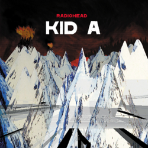

Pablo Honey
Radiohead released their debut album Pablo Honey on February 22, 1993. This was after they found success off of their single “Creep”, which appears as the second track on the album. The album didn’t set the charts on fire at first, but it slowly gathered momentum in the US and UK, likely because of the popularity of “Creep”, as well as their other albums. The album has seen mixed reception since release due to some of the songs sounding like generic alt-rock songs. There are some standout tracks that prove their worth, such as “You”, “Lurgee”, “Blow Out”, and, well, “Creep” obviously. While the album as a whole isn’t necessarily too impressive, the success of “Creep” gave them enough of a boost for them to discover themselves as musicians.

The Bends
Radiohead’s sophomore album, The Bends, builds off their early success while also establishing a more unique sound. This song still contains louder and more energetic songs such as “The Bends”, the album’s namesake, and “My Iron Lung”, which was written in response to their distaste for “Creep”; however, this album contains softer and elegant songs like “High and Dry”, “Bullet Proof … I Wish I Was”, and “Street Spirit (Fade Out)”. The band discovered how to be emotionally vulnerable throughout this album. The album performed much better than their first, both commercially and critically. With The Bends, Radiohead cemented themselves as much more than one-hit wonders.

OK Computer
Radiohead set the bar pretty high for themselves after The Bends, and they proceeded to soar above said bar with their magnum opus: OK Computer. Released on May 21, 1997, OK Computer was immediately regarded as a masterpiece. Despite them finding a proven format with The Bends, Radiohead drastically changed their sound. They experimented slightly with electronic music along with layering unique sounds. The lyrics throughout the album. paint a dystopian picture revolving around technology and capitalism and the weariness that follows. An example of this can be seen in the fifth track: “Let Down”. Every track on the album feels nearly perfect in a way. For all of these reasons, it is widely regarded as one of the best albums of all time.

Kid A
The stress that came with releasing a masterpiece like OK Computer definitely affected the band greatly. They proceeded to completely change everything about their music with their next album: Kid A. Many refer to the transition between the two albums as the “greatest left-turn in music history”. Kid A is fully an electronic album. The album creates an empty-feeling environment nearly devoid of the guitar-driven songs that propelled them forward. This can especially be seen on the track “Idioteque”. After its release on October 2nd, 2000, people were originally confused by its differing sound, and some were turned off by it. However, others hold it in high regard, and it is also widely considered to be a modern classic.

Amnesiac
Releasing on the 30th of May, 2001, Amnesiac features tracks that were being worked on at the same time as the tracks found on Kid A. A lot of the tracks were even more experimental in a way—such as the heavy jazz influence found on the closing track “Life in a Glasshouse”. The album is still regarded as quite a good album, but it doesn’t reach the same heights as the preceding Kid A. That’s not to say the album is without merit. Songs like “Pyramid Song” and “You and Whose Army” still stand out as some of their best.

Hail to the Thief
Radiohead released Hail to the Thief on June 9, 2003. This album was seen as a “return to form” of sorts for some fans due to the album sounding similar to their first three albums. The album features a rock-sounding tracklist along with some electronic influence on tracks such as “The Gloaming”. The songs feature much more politically driven lyrics, and this can even be seen in the title of the album. "Hail to the Thief" refers to the band's resentment towards George Bush. The album is their longest to date, yet many of the songs hover around the three minute range. There are numerous standout tracks such as “There, There”, “Where I End and You Begin”, and “Scatterbrain”.

In Rainbows
On October 10, 2007, Radiohead released their new album In Rainbows in an unprecedented way. They released the album with a pay what you want model. This means people were able to download the album for free if they desired. Along with the unique release method, the album also blew away fans and critics. Many regard the album as one of, if not their best album. The album meshes together rock and electronica with a jazzy undertone to create a stellar experience. A couple of tracks that stand out are “Weird Fishes/Arpeggi” and “All I Need”.

The King of Limbs
Radiohead followed up In Rainbows with The King of Limbs on the 18th of February, 2011. This album is, simply put, weird. It relies on complicated drum loops and vocal effects to create a unique sound. To achieve this effect, they actually got a second drummer to help out: Clive Deamer. The album starts out kinda rough, but it really picks up in the second half. The last four songs are all great, starting with “Lotus Flower” and ending with the stellar “Separator”.

A Moon Shaped Pool
Radiohead’s most recent album released on May 8, 2016. A Moon Shaped Pool displays the band’s increased maturity with beautiful songs complete with orchestral arrangements in many of them. The rock and roll aspect is mostly gone, and we’re left with introspective lyrics and soft, intimate instrumentals. The album is full of piano as opposed to guitars, as is seen in “Daydreaming”, “Glass Eyes”, and “True Love Waits”, which is a notorious song you can learn more about here.